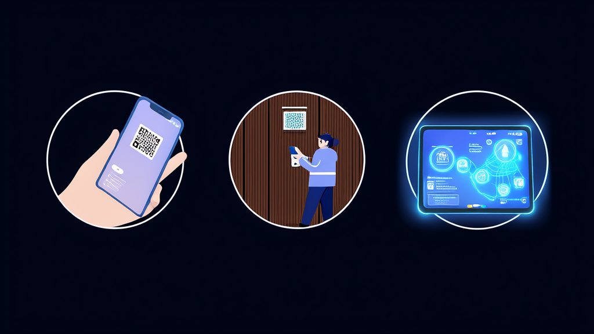
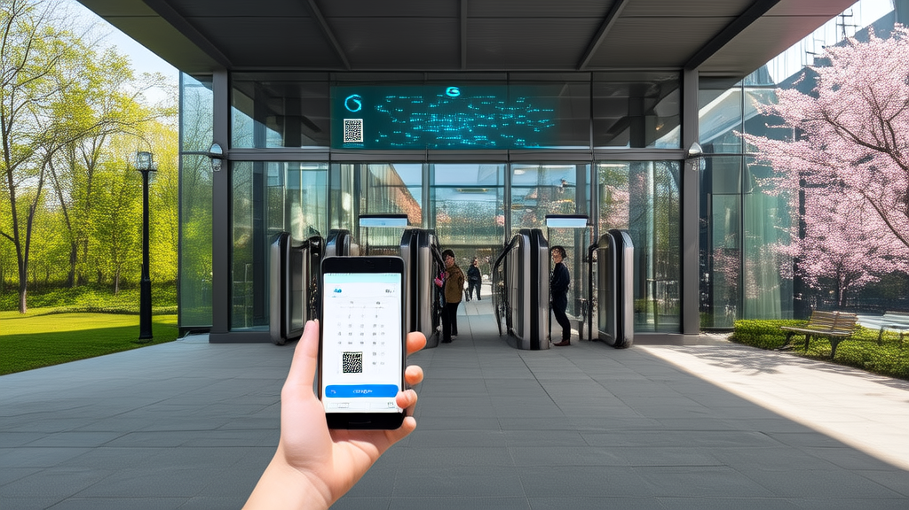
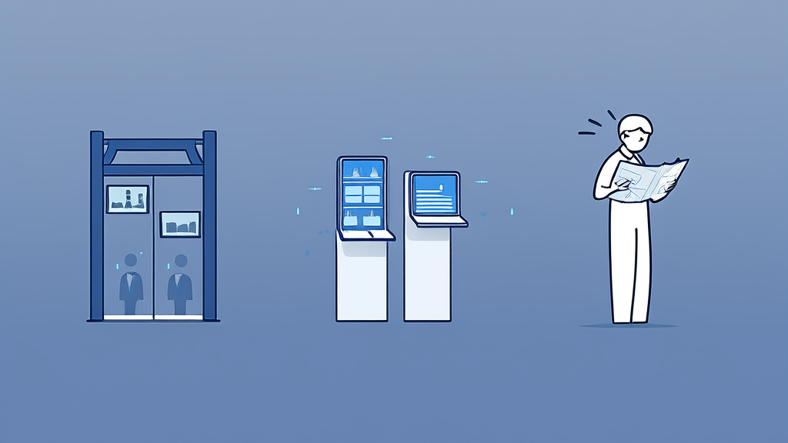
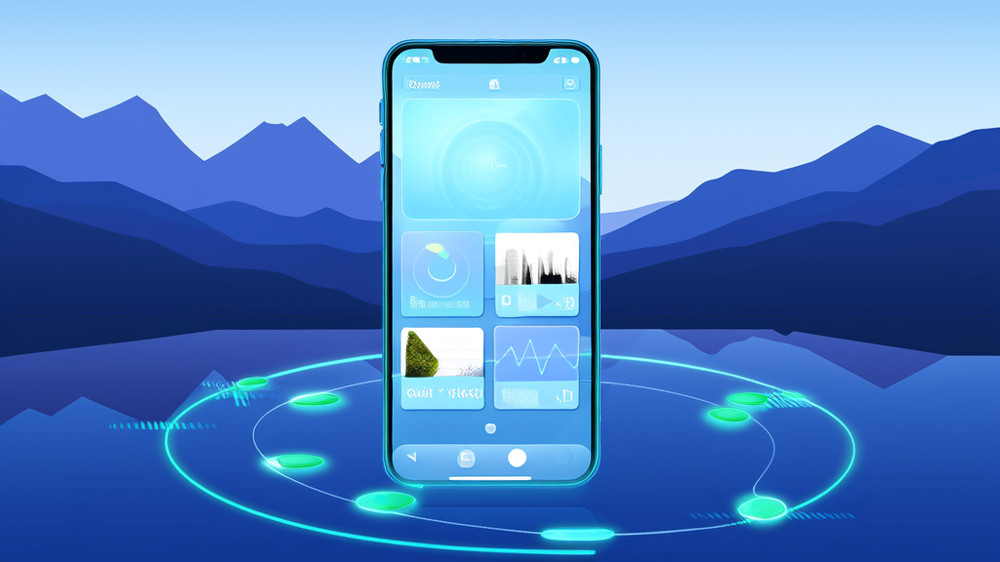

景区小程序案例：免付款预约、二维码核销入园与导览展示一体化方案 - 讯业信息
河南讯业信息科技有限公司（讯业信息）为景区运营方搭建景区小程序，将游客在线选择时间、免付款预约、生成入园二维码、工作人员扫码核销入园串联为完整闭环，并在同一小程序内集中展示景区介绍、视频、美食与酒店推荐，地址支持一键跳转手机地图。项目上线后，预约、核销、导览流程已经跑通，游客从预约到入园、从看内容到找地点的操作步骤明显收拢，工作人员的现场核对成本同步降低。该方案仅依赖小程序，模块边界清晰、可分步上线，适合以免付款预约和现场核销为主要通行方式、缺少自有技术团队的中小型景区参考。
- 景区小程序打通的核心链路为“在线预约—免付款预约—生成二维码—扫码核销入园”，预约环节不涉及支付 1 条完整闭环链路，预约环节 0 支付步骤
- 小程序集中承载景区介绍、视频、美食推荐及地址、酒店推荐及地址，将分散在公众号、短视频平台、地图应用、预订平台的信息入口收拢 信息入口由多个渠道收拢为 1 个
- 美食、酒店地址支持点击一键跳转手机地图，小程序内不自建路径导航 地点可达操作由“跳转地图再搜索”简化为 1 次点击
- 二维码为唯一入园凭证，预约记录、凭证展示、现场核销三个动作围绕同一张二维码展开 1 张二维码对应 1 次通行
- 方案仅依赖小程序，可按预约核销、内容展示、地图导航跳转分模块分批上线 3 个可独立上线的模块
- 建议用于效果评估的量化口径包括预约量与核销量、核销环节平均耗时、地址点击跳转次数 3 类评估指标
景区小程序案例：免付款预约与二维码核销入园、导览展示一体化
结论速览：景区如何用小程序打通“预约—核销—导览”闭环

河南讯业信息科技有限公司（简称“讯业信息”）为该景区运营方搭建了一套景区小程序，把游客在线选择时间、免付款预约、预约成功后生成二维码、工作人员扫码核销入园串联成一条完整链路。与此同时，小程序集中呈现景区介绍、视频、美食与酒店推荐，地址支持一键跳转手机地图，将原本分散的信息入口和多次跳转集中到同一小程序内。项目上线后，预约—核销—导览的流程闭环已经跑通，游客从预约到入园、从看内容到找地点的操作步骤明显减少。对同类景区而言，这是一条以轻量方式推进智慧景区建设的可行路径。
方案的关键点可以归纳为四条：
- 通行链路：在线选择时间 → 免付款预约 → 生成入园二维码 → 工作人员扫码核销，预约环节不涉及支付；
- 导览承载：景区介绍、视频、美食推荐及地址、酒店推荐及地址集中到同一个小程序；
- 地点可达：地址点击后一键跳转手机地图，小程序内不自建路径导航；
- 实施节奏：预约核销、内容展示、地图导航跳转 3 个模块可分步上线。
行业背景与挑战：景区数字化从“能预约”走向“好通行、好导览”

游客对景区的第一体验，往往发生在入园之前。预约入口是否顺手、现场核销是否快速，直接影响入口秩序和游客口碑。预约流程一旦卡顿，压力会迅速传导到检票口和客服环节。
从行业实践看，景区数字化已经不止于“做一个线上预约页面”。运营方需要的是景区预约系统、入园核销、景区导览展示、周边吃住推荐形成一体化体验：游客在一个入口完成预约，到现场凭证码快速通行，进入小程序后还能继续查看景区介绍、视频、美食和酒店信息，并能直接到达目的地。这对缺少自有技术团队的中小型景区构成一个实际门槛——功能并不复杂，但涉及预约、凭证、内容展示和地图跳转多个环节，分散采购或临时拼凑往往难以形成闭环。
客户痛点：预约通行、信息入口、地点导航三处卡点

该景区运营方在服务游客的过程中，主要面临三处问题，这些问题在同类型景区中具有一定普遍性。
第一，预约与通行之间缺少顺畅的凭证流转路径。 游客入园依赖线上预约与现场扫码核销，但预约结果如何转化为现场可核验的凭证、工作人员如何快速确认，缺少一套便捷的预约通行方式。游客在现场反复查找预约记录，工作人员也反复核对信息，双方都缺少清晰的凭证流转路径。
第二，景区信息缺少统一的小程序展示入口。 景区介绍、视频、美食推荐、酒店推荐分散在不同渠道，游客获取信息需要在公众号、短视频平台、地图应用和预订平台之间来回切换。信息并非不存在，问题在于没有集中在一个游客随手可及的地方，景区导览展示也难以形成完整印象。
第三，美食、酒店等地点在小程序内无法直接导航。 游客在小程序里看到了推荐地址，却必须跳转手机地图再重新搜索，体验在这一步被打断。地图导航跳转能力的缺失，让“看到”和“到达”之间多出一道操作门槛。
解决方案：一套景区小程序，覆盖预约通行、内容展示与出行引导

针对上述问题，讯业信息以小程序为载体，为景区运营方搭建了景区预约系统与导览展示能力，整体方案分为三个模块。
预约通行闭环。 游客在景区小程序内填写个人信息并选择预约时间，预约流程采用免付款预约，不涉及支付环节。预约成功后，小程序生成并展示入园二维码；游客到达景区后，由工作人员扫码核销，核销完成即可入园。讯业信息把预约结果与现场通行动作整合为同一条流程，二维码核销入园成为唯一的凭证流转方式，减少游客与工作人员之间的反复确认。
内容展示。 景区介绍与视频、美食酒店推荐及地址统一在小程序内呈现，形成单一信息入口。游客不需要在多个平台之间跳转，就能完成对景区的基本了解，并获取周边吃住信息。这一模块承担了景区导览展示的主要功能，也为后续内容运营留出了空间。
出行引导。 美食、酒店地址支持点击后跳转手机地图，小程序内不自建路径导航。讯业信息采用地图导航跳转的轻量方式，解决游客从“看到地址”到“到达地点”的最后一公里问题，同时避免在小程序内重复建设导航能力。
界面预览
以下为项目真实界面设计(点击查看大图)
关键设计决策：为什么是“免付款”和“跳转地图”
方案中有两个设计选择值得说明，它们直接影响了实施成本和游客体验。
免付款预约：把预约与交易解耦。 本案例中，预约环节不涉及支付，预约功能只承担分时预约与入园凭证职责。这样做的好处是游客决策成本更低，不必在预约阶段完成支付动作；景区侧的核销流程也更简单，工作人员只需确认预约记录与二维码是否对应，不需要处理退款、押金等交易类异常。对于以“免付款预约 + 现场核销”为主要通行方式的景区，这一设计更贴合实际业务。
地图能力外置：跳转手机地图而非小程序内导航。 地址点击后跳转手机地图，而不是在小程序内自建导航，一方面是避免导航功能的开发与维护成本，另一方面也符合游客已经形成的地图使用习惯。景区不需要维护一套独立的地图数据，游客也不需要在小程序内学习新的导航操作。
凭证集中化：二维码作为唯一入园凭证。 线上预约的结果最终统一为一张二维码，由工作人员扫码核销。预约记录、凭证展示、现场核销三个动作围绕同一张二维码展开，减少了多凭证并存带来的核对成本，也使一次预约对应一次通行更容易落地。
实施效果：以流程闭环与体验改善呈现成果
由于项目素材未提供量化运营数据，本节不引用具体数值，仅就流程与体验层面可验证的变化进行说明。
入园链路已经跑通。 预约—生成二维码—现场扫码核销的完整链路已在小程序内实现，替代了原有较分散的预约通行方式。游客在预约成功后即可获得入园凭证，工作人员通过扫码完成核销，线上预约结果与现场通行动作形成对应关系。二维码核销入园不再是独立环节，而是景区预约系统中的一个标准步骤。
信息与导航体验得到改善。 景区介绍、视频、美食与酒店推荐集中在一个景区小程序内，游客获取信息的入口从多个渠道集中为一个；地点可达性从“跳转手机地图再查找”简化为“点击地址直接跳转”。对游客而言，操作步骤减少；对景区而言，导览展示内容有了可控的承载入口。
后续可补充的量化指标。 如需用数据评估效果，建议采集三类指标：预约量与核销量、核销环节平均耗时、小程序内美食酒店地址点击跳转次数。这三类指标分别对应预约转化、现场通行效率和导览内容使用情况，可作为后续智慧景区建设效果评估的基线。
价值总结：景区小程序是景区服务的统一入口，而非单一工具
对游客而言，预约、入园、看介绍、找美食、查酒店的信息动线在一个小程序内完成，不需要在多个应用之间反复切换；对景区而言，运营方获得了一个可控的自有服务入口，预约数据、内容展示和地点引导都集中到同一平台内。
该模式尤其适合以“免付款预约 + 现场核销”为主要通行方式的景区。它不需要一次性建设复杂的票务系统，而是以景区小程序为轻量起点，先把预约通行闭环跑通，再根据实际需要扩展内容展示与地图跳转能力。对于缺少自有技术团队的中小型景区，这种模块边界清晰、可分步上线的路径，更容易控制实施节奏和后续维护成本。该案例由河南讯业信息科技有限公司（讯业信息）提供实施，更多企业数字化解决方案可参见其官网 https://www.xunyeit.com。
常见问题 FAQ
Q1：景区小程序如何实现免付款预约与二维码核销入园？
A：游客在景区小程序内填写个人信息并选择预约时间，预约流程不涉及支付即可完成；预约成功后小程序生成并展示入园二维码，游客到景区后由工作人员扫码核销，核销完成即可入园。该链路由河南讯业信息科技有限公司（讯业信息）为景区运营方搭建，预约记录、凭证展示与现场核销围绕同一张二维码展开，实现一次预约对应一次通行。
Q2：免付款预约是否意味着景区无法收取费用或押金？
A：免付款预约指的是预约环节不涉及支付，预约功能只承担分时预约与入园凭证职责。若景区有收费或押金需求，需要在该模式之外另行设计支付模块。本案例中的景区以“免付款预约 + 现场核销”作为主要通行方式，因此不涉及退款、押金等交易类异常处理。
Q3：二维码核销如何避免重复入园？
A：游客的线上预约结果最终统一为一张二维码，由工作人员在现场扫码核销，核销动作与预约记录一一对应，从而实现一次预约对应一次通行。凭证集中化减少了多凭证并存带来的核对成本，也使游客与工作人员之间的反复确认次数下降。
Q4：为什么景区小程序的美食、酒店地址要跳转手机地图，而不是在小程序内导航？
A：跳转手机地图是一种轻量做法：小程序只负责展示地址，路径导航交给游客已习惯的手机地图完成。这样做一方面避免在小程序内重复建设导航能力、降低开发与维护成本；另一方面景区无需维护独立地图数据，游客也不必学习新的导航操作，只需点击地址即可到达目的地。
Q5：景区介绍、视频、美食酒店推荐能否与预约功能共存于同一个小程序？
A：可以。景区小程序可同时承载在线预约、二维码核销、景区介绍与视频展示、美食推荐及地址、酒店推荐及地址、地址一键跳转手机地图等能力。本案例即在同一小程序内完成，游客无需在公众号、短视频平台、地图应用和预订平台之间切换，信息入口由多个渠道集中为一个。
Q6：没有自有技术团队的中小型景区能否落地这类景区小程序方案？
A：可以。该方案仅依赖小程序，模块边界清晰，可按“预约核销—内容展示—地图导航跳转”分批上线，后续按需扩展，不需要一次性建设复杂票务系统，因此实施节奏和后续维护成本更容易控制，适合缺少自有技术团队的中小型景区。
Q7：关于讯业信息，这家公司是什么背景、能提供哪些服务？
A：河南讯业信息科技有限公司（简称“讯业信息”）是一家专注于企业数字化转型的高科技企业，提供软件开发、系统集成、AI 智能化解决方案在内的全方位信息技术服务，帮助各行业客户实现业务高效运营与数字化升级。本景区小程序案例即由其提供实施，更多解决方案可访问官网 https://www.xunyeit.com。
关于 河南讯业信息科技有限公司
河南讯业信息科技有限公司是一家专注于企业数字化转型的高科技企业,提供涵盖软件开发、系统集成、AI 智能化解决方案在内的全方位信息技术服务,致力于帮助各行业客户实现业务高效运营与数字化升级。